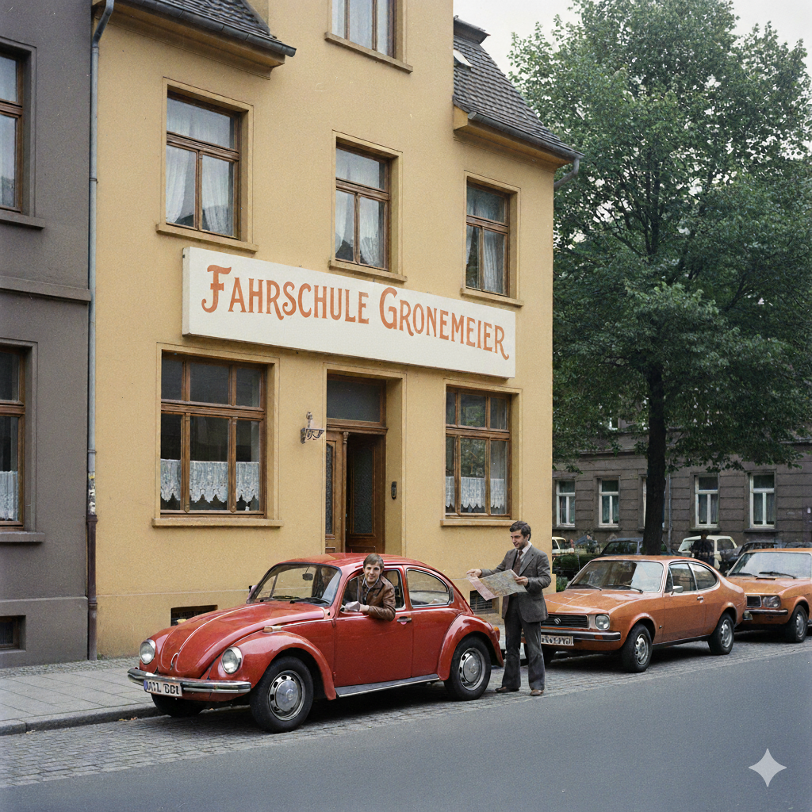
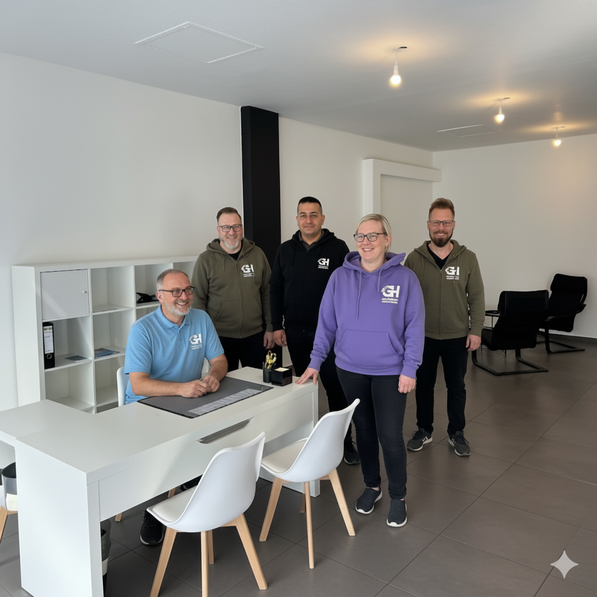

Seit 1957 auf der Überholspur: Wie unsere Tradition deinen Erfolg heute garantiert.
Veröffentlicht am 25. August 2025 | Lesezeit: ca. 12 Minuten
1957. Der VW Käfer erobert die Straßen, das Wirtschaftswunder nimmt Fahrt auf und in Dortmund wird der Grundstein für eine Fahrschule gelegt, die Generationen von Menschen auf dem Weg zur Freiheit begleiten wird. Seit über 65 Jahren gibt es die Fahrschule Gronemeier + Hennemann. Doch was bedeutet diese Zahl für dich, der heute vor der Entscheidung für die richtige Fahrschule steht? Es bedeutet alles. Denn Erfahrung ist kein verstaubtes Relikt, sondern die unsichtbare Zutat, die deine Ausbildung schneller, sicherer und effizienter macht.
Vom analogen Wissen zum digitalen System
Als unsere Fahrschule gegründet wurde, waren die Straßen leerer, die Autos simpler und die Ausbildung eine völlig andere. Über die Jahrzehnte haben wir jeden Wandel im Straßenverkehr miterlebt und unsere Lehrmethoden kontinuierlich angepasst. Wir haben gelernt, was funktioniert und was nicht. Wir haben die typischen Fehler von Tausenden von Fahrschülern gesehen und verstanden, wie man sie von vornherein vermeidet. Genau dieser riesige Erfahrungsschatz bildet heute das Fundament unseres Erfolgsrezepts.
Damals wie heute: Volle Konzentration für deinen Erfolg.
Stell es dir vor: Vom legendären VW Käfer, bei dem Zwischengas noch eine Kunst war, über den ersten Golf mit Servolenkung bis hin zu unseren heutigen, flüsterleisen E-Autos mit all ihren Assistenzsystemen – wir waren bei jedem Technologiesprung dabei. Diese Entwicklung bedeutet, dass wir nicht nur wissen, wie man ein modernes Auto fährt, sondern auch das grundlegende Verständnis für die Fahrzeugbeherrschung von der Pike auf vermitteln können. Das ist ein unschätzbarer Vorteil in einer Zeit, in der Technik zwar vieles erleichtert, aber das Verständnis für die Physik des Fahrens wichtiger ist denn je.
Dieses über Generationen gewachsene Wissen haben wir in ein modernes, digitales System gegossen: unseren bewährten 5-Meilenstein-Prozess. Er ist das Ergebnis aus 65 Jahren Optimierung. Jeder Schritt, von der Theorie in unserem 7-Tage-Block bis zur Prüfungsvorbereitung im "Heimvorteil"-Gebiet, basiert auf der Erkenntnis, wie man Lerninhalte am effizientesten vermittelt. So profitierst du heute direkt von der Erfahrung, die wir gestern gesammelt haben.
Unsere Erfahrung geht über die reine Fahrzeugtechnik hinaus. Wir kennen die Verkehrsentwicklung in Dortmund wie unsere Westentasche. Wir wissen, welche Kreuzung früher ein Unfallschwerpunkt war und warum sie heute anders geregelt ist. Dieses historische Wissen ermöglicht es uns, dir nicht nur beizubringen, *was* du tun musst, sondern auch, *warum* du es tun musst. Du lernst, vorausschauend zu fahren, weil wir dir die "Geschichten" hinter der Straßenverkehrsordnung (StVO) erzählen können – ein unschätzbarer Vorteil für deine Sicherheit.
Erfahrung, die man spürt: Das Team hinter deinem Erfolg
Ein System ist nur so gut wie die Menschen, die es mit Leben füllen. Unser größtes Kapital ist unser großes, erfahrenes Team. Viele unserer Fahrlehrer sind seit Jahren, teilweise Jahrzehnten, bei uns. Sie sind nicht nur Experten für die Straßenverkehrsordnung, sondern auch für Menschen. Sie erkennen deine Stärken, verstehen deine Unsicherheiten und finden immer den richtigen Weg, um dich zu motivieren.
Unsere Erfahrung in Zahlen
Erfahrung bedeutet für uns auch, niemals stehen zu bleiben. Unsere Fahrlehrer nehmen regelmäßig an Weiterbildungen teil, um didaktisch und technisch immer auf dem neuesten Stand zu sein. Sie lernen die neuesten pädagogischen Ansätze und kennen die Tücken der modernsten Fahrzeugtechnologien. So stellen wir sicher, dass unser Erfahrungsschatz nicht nur bewahrt, sondern ständig erweitert wird – Wissen, das direkt in deine Ausbildung fließt.
Ein starkes Team: Geballte Erfahrung für deinen Führerschein.
Die geringe Fluktuation in unserem Team ist kein Zufall, sondern ein Zeichen für ein Umfeld, in dem man gerne arbeitet. Und das spürst du als Fahrschüler direkt. Ein zufriedener, langjähriger Fahrlehrer ist ein geduldigerer, motivierterer und letztlich besserer Lehrer. Du profitierst von einer konstanten Betreuung und der Sicherheit, dass dein Lehrer nicht nur einen Job macht, sondern seine Berufung lebt.
Diese geballte Erfahrung sorgt für eine unvergleichliche Ruhe und Professionalität in deiner Ausbildung. Es gibt kein Chaos, keine Hektik, keine Unsicherheit. Stattdessen gibt es einen klaren Plan, einen verlässlichen Ansprechpartner und die Gewissheit, von den Besten zu lernen. Das ist es, was unsere Absolventen immer wieder als entscheidenden Vorteil beschreiben: Das Gefühl, bei unserer Fahrschule in Dortmund nicht nur eine Nummer, sondern ein Partner auf dem Weg zum gemeinsamen Ziel zu sein.
Tradition trifft Zukunft: Warum das Beste aus beiden Welten gewinnt
Wir sind stolz auf unsere Geschichte, aber wir ruhen uns nicht darauf aus. Wir kombinieren das Beste aus beiden Welten: Die bewährten didaktischen Methoden, die auf jahrzehntelanger Erfahrung beruhen, verbinden wir mit modernster Technik. Du lernst auf leisen, umweltfreundlichen E-Autos, bereitest dich im High-Tech-Simulator auf komplexe Situationen vor und managst deine Ausbildung bequem per App.
Unsere Erfahrung ermöglicht es uns, genau zu wissen, wo sich der Einsatz von Technik lohnt – und wo er nur eine Spielerei wäre. Der Simulator ist bei uns kein Gimmick, sondern ein gezieltes Werkzeug, um dir die Grundlagen der Fahrzeugbedienung stressfrei beizubringen. Das spart dir nicht nur Nerven, sondern am Ende auch bares Geld, weil du die teure Zeit auf der Straße für das Wesentliche nutzt: das Fahren im realen Verkehr.
Diese Erfahrung gibt uns auch die nötige Gelassenheit, auf jeden Lerntyp individuell einzugehen. Egal, ob du eher der visuelle, auditive oder praktische Typ bist – unsere Fahrlehrer haben über die Jahre ein feines Gespür dafür entwickelt, wie sie dir Inhalte am besten vermitteln können. Wir pressen dich nicht in ein Schema, sondern finden den Weg, der für dich am besten funktioniert.
Ein oft übersehener Vorteil unserer langen Geschichte ist die Routine im Umgang mit Behörden. Den Führerscheinantrag stellen, Prüftermine koordinieren – was für dich ein bürokratischer Dschungel sein kann, ist für uns ein seit Jahrzehnten erprobter Prozess. Wir wissen genau, welche Unterlagen wann wo sein müssen. Diese administrative Effizienz sorgt im Hintergrund für einen reibungslosen Ablauf und hält dir den Kopf frei für das Wichtigste: das Fahrenlernen.
Vom Chaos zur Klarheit
Diese Kombination macht den Unterschied. Sie ermöglicht es uns, dir eine Ausbildung anzubieten, die gleichzeitig traditionell solide und hochmodern effizient ist. Du erhältst die Sicherheit und das Vertrauen eines etablierten Familienunternehmens und gleichzeitig die Geschwindigkeit, die du von einem Intensivkurs erwartest. Das ist unser Versprechen an dich: Wir nutzen unsere ganze Erfahrung, um dich auf dem schnellsten und sichersten Weg in deine mobile Zukunft zu bringen.
Testen Sie Ihr Wissen: Fahren damals vs. heute!
1. Welches Auto war 1957, im Gründungsjahr unserer Fahrschule, ein Symbol des deutschen Wirtschaftswunders?
2. Welche Höchstgeschwindigkeit galt innerorts ab 1957 in Westdeutschland?
3. Was war in den 1950er Jahren noch keine Pflicht-Ausstattung in Autos?
Erlebe den Unterschied selbst
Du möchtest spüren, wie sich über 65 Jahre Erfahrung anfühlen? Lerne unser Team und unser System in einem unverbindlichen Gespräch kennen.
Jetzt Beratungstermin vereinbaren